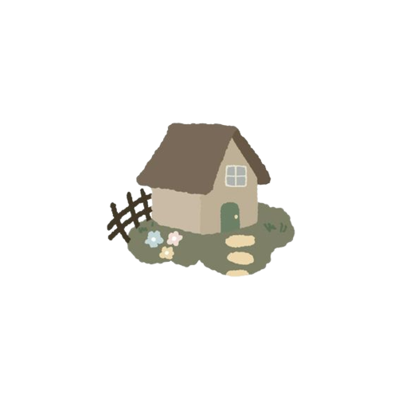
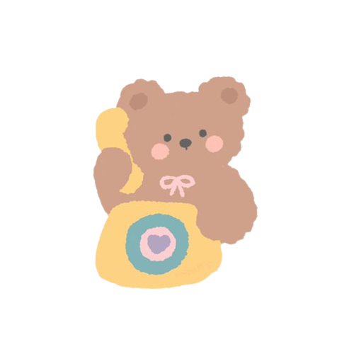
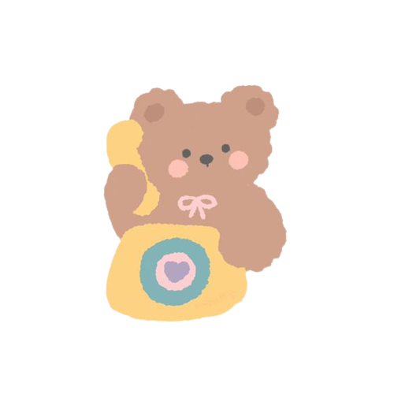

 

a b o u t

| n a m e Adrienne Faith B. Villaruel |
a g e 15 |
b i r t h d a y September 4, 2007 |
o t h e r s Pronouns: She/Her MBTI: INFJ-T Zodiac Sign: Virgo Enneagram: 8w7 |
|---|
| I am currently a highschool student. I am part of our school's Journalism Club, Papyrus. I am also the EIC. I have 4 cats. I LOVE CATS SO MUCH! I love listening to Taylor Swift, Nirvana, NewJeans, and other music artists. My music taste is all over the place, but I can say that I have an exquisite, divine, and the best music taste ever. Ever. I love books, too. I love mystery, psychological thriller, horror, action, comedy, as well as romance in movie and novel genres. My all-time-favorite subject is English. It has always been and will always be English, my beloved. "What subject do you hate the most then?", you may ask. Well, it is Math I have been detesting for a long time now. It's just so... dehumanizing, life-wrecking subject to me. It's not my forte. I have always known that it's not Math I excell in. I am more into the liguistic side of the world, in general. Psychology, Literature, Philosophy, Film and Theatre interests my curiosity most of the time. I can say that I am a private person. I don't really like sharing too much of my personal life. That's why all my social medias are in private mode. I am an extrovert, but sometimes I'm quiet and I'm just not in the mood to socialize with other people. But I also like social events. I like meeting new people, and that makes me an extrovert. My pet peeves are too many to mention, but one is I don't like tardy people. I personally value time so much that I try to be early as possible. Don't get me wrong... I also get late sometimes, but I make sure that I'm not plainly late, but fashionably late. I don't really have something to consider as talent, but I can write, and be confident enough to speak in front of other people. As a lowkey narcissist, I don't like making mediocre works in all aspects. I always try to be the best in all aspects. I think that would be the nutshell of my character. I think I'm already oversharing. |
|---|